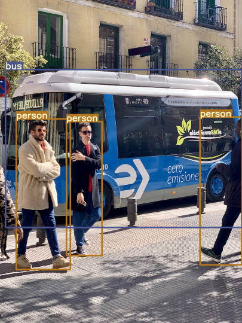

Intuition for yolort¶
[1]:
import cv2
import torch
from yolort.utils import cv2_imshow, get_image_from_url, read_image_to_tensor
from yolort.utils.image_utils import color_list, plot_one_box
[2]:
import os
os.environ["CUDA_DEVICE_ORDER"]="PCI_BUS_ID"
os.environ["CUDA_VISIBLE_DEVICES"]="5"
device = torch.device('cuda' if torch.cuda.is_available() else 'cpu')
Read an image¶
Let’s request and pre-process the images that to be detected.
[3]:
img_raw = get_image_from_url("https://gitee.com/zhiqwang/yolov5-rt-stack/raw/master/test/assets/bus.jpg")
# img_raw = cv2.imread('../test/assets/bus.jpg')
img = read_image_to_tensor(img_raw)
img = img.to(device)
Model Definition and Initialization¶
[4]:
from yolort.models import yolov5n6
[5]:
model = yolov5n6(pretrained=True, score_thresh=0.55)
[6]:
model.eval()
model = model.to(device)
[7]:
# Perform inference on an image tensor
model_out = model.predict(img)
/home/chi/anaconda3/envs/yolo/lib/python3.8/site-packages/torch/functional.py:445: UserWarning: torch.meshgrid: in an upcoming release, it will be required to pass the indexing argument. (Triggered internally at /opt/conda/conda-bld/pytorch_1634272106004/work/aten/src/ATen/native/TensorShape.cpp:2157.)
return _VF.meshgrid(tensors, **kwargs) # type: ignore[attr-defined]
Varify the PyTorch backend inference results¶
[8]:
model_out[0]['boxes'].cpu().detach()
[8]:
tensor([[ 53.57971, 384.40021, 229.50615, 901.34735],
[ 9.73776, 223.84700, 798.18042, 755.73584],
[677.23083, 376.17642, 808.65375, 876.10358],
[228.31302, 402.98254, 343.62546, 855.54791]])
Target outputs of boxes (yolov5n6, with shape of 1080x810):
tensor([[ 53.57971, 384.40021, 229.50615, 901.34735],
[ 9.73776, 223.84700, 798.18042, 755.73584],
[677.23083, 376.17642, 808.65375, 876.10358],
[228.31302, 402.98254, 343.62546, 855.54791]])
[9]:
model_out[0]['scores'].cpu().detach()
[9]:
tensor([0.90058, 0.86442, 0.84255, 0.77846])
Target outputs of scores: (``yolov5n6``, with shape of 1080x810)
tensor([0.90058, 0.86442, 0.84255, 0.77846])
[10]:
model_out[0]['labels'].cpu().detach()
[10]:
tensor([0, 5, 0, 0])
Target outputs of labels:
tensor([0, 5, 0, 0])
Detection output visualisation¶
First let get the labels of COCO datasets.
[11]:
# Get label names
import requests
labels = []
response = requests.get("https://gitee.com/zhiqwang/yolov5-rt-stack/raw/master/notebooks/assets/coco.names")
names = response.text
for label in names.strip().split('\n'):
labels.append(label)
The labels can also be obtained by
from yolort.utils.image_utils import load_names
labels = load_names('../notebooks/assets/coco.names')
[12]:
colors = color_list()
for box, label in zip(model_out[0]['boxes'].tolist(), model_out[0]['labels'].tolist()):
img_raw = plot_one_box(box, img_raw, color=colors[label % len(colors)], label=labels[label])
[13]:
cv2_imshow(img_raw, imshow_scale=0.5)

Scripting YOLOv5¶
[14]:
# TorchScript export
print(f'Starting TorchScript export with torch {torch.__version__}...')
export_script_name = 'yolov5n6.torchscript.pt' # filename
Starting TorchScript export with torch 1.10.0...
[15]:
model_script = torch.jit.script(model)
model_script.eval()
model_script = model_script.to(device)
/home/chi/anaconda3/envs/yolo/lib/python3.8/site-packages/torch/jit/_recursive.py:614: LightningDeprecationWarning: The `LightningModule.datamodule` property is deprecated in v1.3 and will be removed in v1.5. Access the datamodule through using `self.trainer.datamodule` instead.
item = getattr(mod, name, None)
/home/chi/anaconda3/envs/yolo/lib/python3.8/site-packages/torch/jit/_recursive.py:614: LightningDeprecationWarning: The `LightningModule.loaded_optimizer_states_dict` property is deprecated in v1.4 and will be removed in v1.6.
item = getattr(mod, name, None)
[16]:
# Save the scripted model file for subsequent use (Optional)
model_script.save(export_script_name)
Inference on TorchScript Backend¶
[17]:
x = [img]
out = model(x)
out_script = model_script(x)
/home/chi/project/yolov5-rt-stack/yolort/models/yolo.py:180: UserWarning: YOLO always returns a (Losses, Detections) tuple in scripting.
warnings.warn("YOLO always returns a (Losses, Detections) tuple in scripting.")
/home/chi/project/yolov5-rt-stack/yolort/models/yolo_module.py:127: UserWarning: YOLOv5 always returns a (Losses, Detections) tuple in scripting.
warnings.warn("YOLOv5 always returns a (Losses, Detections) tuple in scripting.")
Varify the Inference Output on LibTorch backend¶
[18]:
for k, v in out[0].items():
torch.testing.assert_allclose(out_script[1][0][k], v, rtol=1e-07, atol=1e-09)
print("Exported model has been tested with libtorch, and the result looks good!")
Exported model has been tested with libtorch, and the result looks good!
Comparing Inference Time between pytorch and libtorch¶
Time consumed on PyTorch backend
[19]:
%%timeit
with torch.no_grad():
out = model(x)
128 ms ± 160 µs per loop (mean ± std. dev. of 7 runs, 10 loops each)
Time consumed on LibTorch backend
[20]:
# Dummy run once for torchscript
with torch.no_grad():
out_script = model_script(x)
[21]:
%%timeit
with torch.no_grad():
out_script = model_script(x)
109 ms ± 402 µs per loop (mean ± std. dev. of 7 runs, 1 loop each)
View this document as a notebook: https://github.com/zhiqwang/yolov5-rt-stack/blob/main/notebooks/inference-pytorch-export-libtorch.ipynb